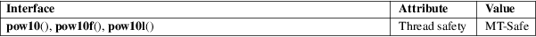

pow10, pow10f, pow10l − base-10 power functions
Math library (libm, −lm)
#define
_GNU_SOURCE /* See feature_test_macros(7) */
#include <math.h>
double
pow10(double x);
float pow10f(float x);
long double pow10l(long double x);
These functions return the value of 10 raised to the power x.
Note well: These functions perform exactly the same task as the functions described in exp10(3), with the difference that the latter functions are now standardized in TS 18661-4:2015. Those latter functions should be used in preference to the functions described in this page.
For an explanation of the terms used in this section, see attributes(7).

GNU.
glibc 2.1. Removed in glibc 2.27.
exp10(3), pow(3)